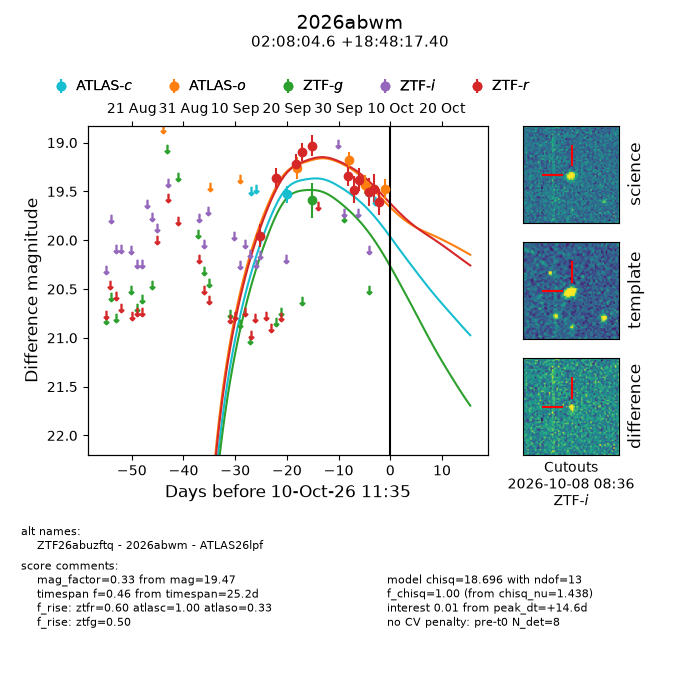
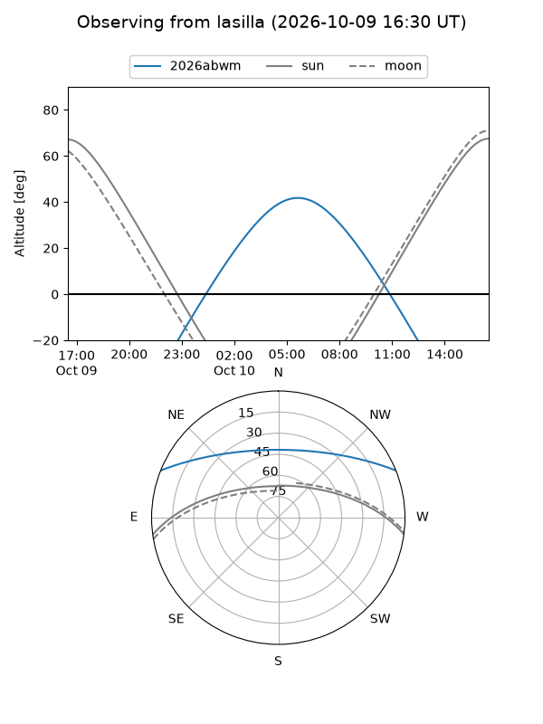
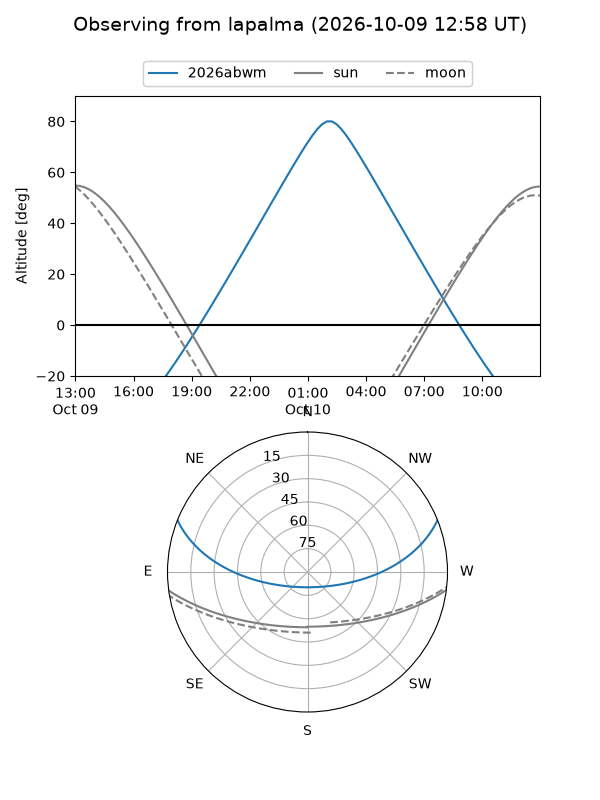
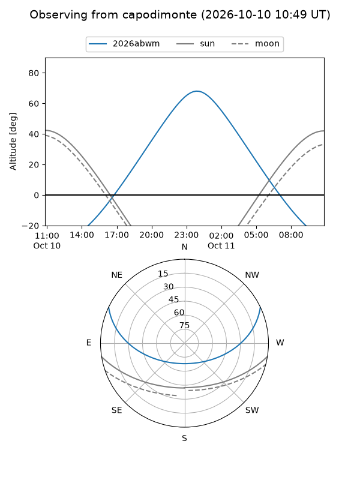
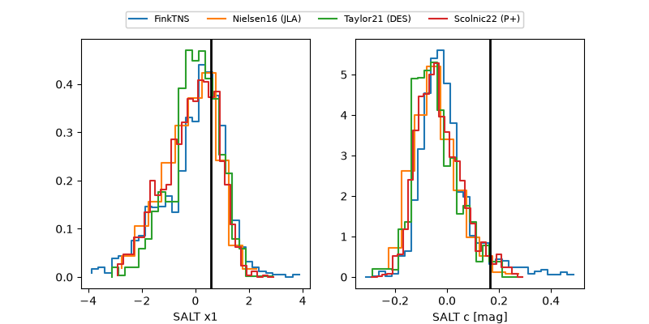

2026abwm
Target 2026abwm at 2026-10-10 11:36
Aliases and brokers:
FINK-ZTF: ztf.fink-portal.org/ZTF26abuzftq
Lasair-ZTF: lasair-ztf.lsst.ac.uk/objects/ZTF26abuzftq
ALeRCE-ZTF: alerce.online/object/ZTF26abuzftq
YSE-PZ: ziggy.ucolick.org/yse/transient_detail/2026abwm
TNS name: wis-tns.org/object/2026abwm
Direct TNS query: direct search
alt names
ZTF26abuzftq (ztf,fink_ztf)
2026abwm (tns,yse)
ATLAS26lpf (atlas)
Coordinates:
equatorial (ra, dec) = 32.0194,+18.80483
equatorial (HMS+DMS) = 02:08:04.65,+18:48:17.40
galactic (l, b) = (147.0298,-40.45343)
Flags:
peak dt: +14.6
Photometry:
last atlasc=19.51, atlaso=19.47, ztfg=19.59, ztfr=19.61
2 atlasc, 4 atlaso, 1 ztfg, 11 ztfr detections
Lightcurve

Visibility



Additional plots
